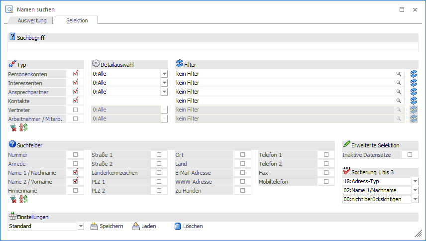
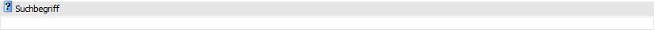
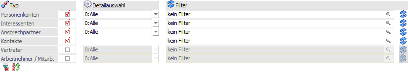
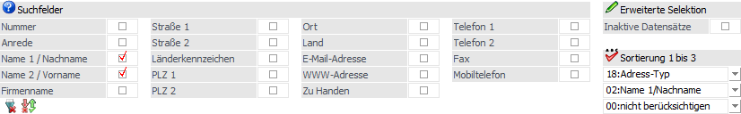
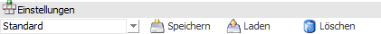

Im Register "Selektion" wird definiert, welche Datenbereiche als Basis für die Suche verwendet werden sollen.

Suche

Ø Suchbegriff
In diesem Feld kann der Suchbegriff hinterlegt werden, wobei die Suche per Button "Anzeigen" bzw. der Taste F5 oder durch einen Wechsel auf das Register Auswertung ausgelöst wird.
Hinweis
In welchen Datenbereichen und Feldern gesucht werden soll, wird in den nachfolgenden Einstellungen definiert.
Datenbereich

Mit Hilfe der folgenden Einstellung kann definiert werden, in welchen Datenbereichen die Suche erfolgen soll.
Ø Typ
In dieser Rubrik kann entschieden werden, welche Datenbereiche in die Suche mit einbezogen werden sollen. Dabei stehen die folgenden Typen zur Verfügung:
ü Personenkonten
ü Interessenten (nur bei Einsatz von WinLine FAKT)
ü Ansprechpartner
ü Kontakte
ü Vertreter (nur bei Einsatz von WinLine FAKT)
ü Arbeitnehmer (nur bei Einsatz von WinLine LOHN A bzw. WinLine SMART)
Durch Deaktivieren der jeweiligen Checkbox wird der Datenbereich aus der Suche ausgenommen.
Ø alle Typen selektieren
Durch Anwahl dieses Buttons werden alle Typen selektiert.
Ø Auswahl der Typen umkehren
Mit Hilfe dieses Buttons wird die Auswahl der Typen umgekehrt.
Ø Detailauswahl
Bei gewissen Datenbereichen kann aus einer Auswahlliste der Bereich eingeschränkt werden, in welchem gesucht werden soll.
ü Personenkonten /
Interessenten
Es kann zwischen "0 - Alle", "1 - Debitoren" und "2 -
Kreditoren" gewählt werden.
ü Ansprechpartner
Es kann
zwischen "0 - Alle", "1 - Ansprechpartner" und "2 - Firmen-Kontakt" gewählt
werden.
ü Vertreter
Es kann zwischen "0 -
Alle", "1 - Vertreter" und "2 - Vertretergruppen" gewählt werden.
ü Arbeitnehmer / Mitarb.
Es kann
zwischen "0 - Alle", "1 - Arbeitnehmer", "2 - Mitarbeiter" und "3 - Bewerber"
gewählt werden.
Ø Filter
Pro Datenbereich können noch Filter definiert werden, mit denen eine Detail-Suche (z.B. nach gewissen Kennzeichen) möglich ist. Es können pro Datenbereich auch mehrere Filter definiert werden (siehe Button "Filter bearbeiten"), wobei der jeweils gewünschte Filter mittels Matchcode gewählt werden kann.
Ø Filter bearbeiten
Durch Anwahl dieses Buttons kann ein neuer Filter kreiert oder ein bestehender Filter editiert werden.
Sucheinstellungen

In diesem Bereich kann entschieden werden, in welchen Datenfeldern nach dem Suchbegriff gesucht werden soll, ob inaktive Datensätze zu berücksichtigen sind und wie die Sortierung in der Tabelle Suchergebnis erfolgen soll.
Hinweis
Grundsätzlich werden all jene Felder angeboten, welche in allen Datenbereichen gleich sind. Eine Ausnahme bildet das Feld "zu Handen". Bei "Ansprechpartnern", "Kontakten", "Vertreter" und "Arbeitnehmern / Mitarbeitern" erfolgt die Suche bei Auswahl von "zu Handen" automatisch im Feld "Name" bzw. "Nachname".
Ø Suchfelder
Per Checkbox kann definiert werden, in welchen Feldern die Suche erfolgen soll.
Ø Inaktive Datensätze
Durch Aktivieren dieser Checkbox werden auch alle inaktiven Stammdaten in die Suche mit einbezogen.
Ø Sortierung 1 bis 3
Aus den 3 Auswahllisten kann die Sortierung gewählt werden, in welcher die gefundenen Datensätze im Register Auswertung angezeigt werden sollen.
Ø alle Typen selektieren
Durch Anwahl dieses Buttons werden (bis auf die "Nummer") alle Suchfelder selektiert.
Ø Auswahl der Typen umkehren
Mit Hilfe dieses Buttons wird die Auswahl der Typen umgekehrt. Das Feld "Nummer" ist hiervon ausgenommen.
Einstellungen

Ø Einstellungen
Um immer wieder benötigte Einstellungen nicht jedes Mal erneut eingeben zu müssen, gibt es die Möglichkeit die Einstellungen des Registers "Selektion" zu speichern bzw. diese wieder zu laden. Im Eingabefeld können Namen für diese Einstellungen vergeben werden, die dann mittels Button "Speichern" gespeichert werden können.
Hinweis
Diese Einstellungen können auch im Register Auswertung ausgewählt werden. Beim Aufruf des Fensters ist diese auf "Standard" gestellt. Damit werden zunächst nur die Felder "Name 1/Nachname" und "Name 2/Vorname" in den Datenbereichen "Personenkonten", "Interessenten", "Ansprechpartner" und "Kontakte" gesucht. Diese Standard-Einstellung kann jederzeit geändert und durch den Speichern-Button überschrieben werden.
Ø Speichern
Unter dem ausgewählten Namen werden die aktuellen Einstellungen des Registers "Selektion" gespeichert.
Ø Laden
Zum Laden einer gespeicherten Einstellung wird aus der Auswahlliste die entsprechende Einstellung ausgewählt und durch Anklicken des Buttons "Laden" geladen.
Ø Löschen
Nicht mehr benötigte Einstellungen können nach der Auswahl aus der Auswahlliste durch Anklicken des Buttons "Löschen" gelöscht werden.